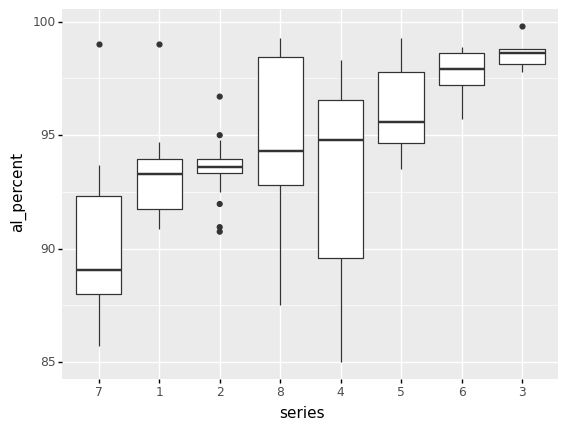
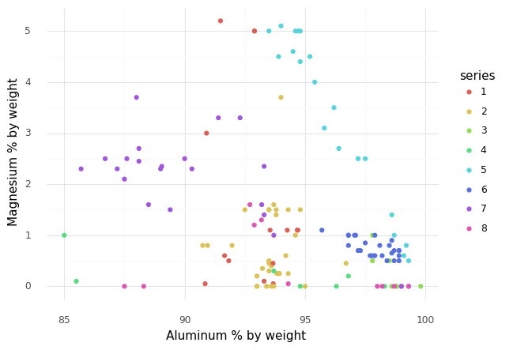
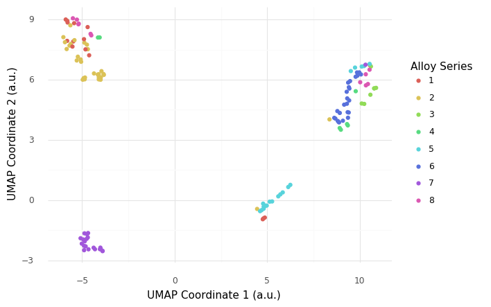

(Day 2) Visualization in Python#
Author: Zach del Rosario
Learning outcomes#
By working through this notebook, you will be able to:
Re-create a number of different plots using
plotnine.Draw conclusions about data using histograms, boxplots, and scatterplots.
Use an advanced dimension reduction technique to plot high-dimensional data: UMAP
Note when another visualization package—
plotly—might be useful for interactive plots.
# Setup
import grama as gr
import pandas as pd
%matplotlib inline
DF = gr.Intention()
# Show all pandas columns
pd.set_option("display.max_columns", None)
# For downloading data
import os
import requests
A Bit of Wrangling#
Let’s download a dataset to use for this notebook.
# Filename for local data
filename_data = "./data/alloys.csv"
# The following code downloads the data, or (after downloaded)
# loads the data from a cached CSV on your machine
if not os.path.exists(filename_data):
# Make request for data
url_data = "https://raw.githubusercontent.com/zdelrosario/mi101/main/mi101/data/wiki_comp.csv"
r = requests.get(url_data, allow_redirects=True)
open(filename_data, 'wb').write(r.content)
print(" Alloy data downloaded from public Google sheet")
else:
# Note data already exists
print(" Alloy data loaded locally")
# Read the data into memory
df_raw = pd.read_csv(filename_data)
This is a dataset about Aluminum alloys, scraped from Wikipedia. The alloy column identifies the specific alloy, al_percent gives the percent Aluminum content (by weight), and the remaining columns give other alloying elements. From the “head” of the data (the first few observations) we can see the alloying elements are sparse—many of the entries are zero.
When studying a new dataset, it’s always a good idea to do some simple ‘first checks’ before going straight to visualizing. We’ll see from these first checks that we need to do some wrangling.
# Check the data's shape
df_raw.shape
We have 137 observations on 28 variables. Because there are so many variables, these data will be difficult to visualize!
# Glimpse the data
df_raw.head()
We have the alloy designation, the aluminum percentage, and a percentage associated with each alloying element (by weight). To better categorize alloys, we might like to create a series column that gives the first digit of the alloy column. Since the alloy values all seem to be integers, it seems like we might be able to do this by doing a floor-division by 1000. However, let’s inspect the datatypes before we try that:
# Check the data types
df_raw.dtypes
Hmmm, the alloy column is an object. When we’ve seen that before, it’s meant the underlying entries are strings. Maybe there are some special characters in some of the alloy identifiers?
(
df_raw
>> gr.tf_filter(gr.str_detect(DF.alloy, "[^\\d]"))
)
There are a few strange, special names in here! On the original Wiki article the V-XXXX alloys are listed under the 1000-Series alloys, so if we could just get the first digit in every alloy string, that would be our series number. The following code uses regular expressions to do just that (\\d means “any digit character”).
## NOTE: No need to edit
## This code extracts the first digit of the
## `alloy` column to create a `series` column
df_alloys = (
df_raw
>> gr.tf_mutate(series=gr.str_extract(DF.alloy, "\\d"))
>> gr.tf_select("series", gr.everything())
)
df_alloys.head()
We can run the filter again to check that we processed the special names the way we intended:
## NOTE: No need to edit
(
df_alloys
>> gr.tf_filter(gr.str_detect(DF.alloy, "[^\\d]"))
)
Excellent! Now that we’ve prepped the data, we’re ready to start visualizing. Here’s a first example using plotnine.
## NOTE: No need to edit
(
df_alloys
>> gr.ggplot(gr.aes("al_percent"))
+ gr.geom_histogram()
)
We’ll start learning plotnine by making changes to this visual.
Aside: The
ggplotfunctionality in this notebook is provided by the plotnine package. However, plotnine is imported by grama, so you can access all of plotnine’s functions throughgr.syntax.
Visualizing with Plotnine#
Note: You’ll notice that plotnine graphs start with this weird ggplot call; that’s because plotnine is an implementation of the grammar of graphics. Ggplot2 is another implementation of this concept, but that package is for the R programming language. Plotnine is essentially a port of ggplot2 into Python.
Q1: Study the Magnesium content#
Modify the plot below to create a histogram of Magnesium content, rather than aluminum content.
###
# TASK: Modify the plot below
###
# -- WRITE YOUR CODE BELOW -----
(
df_alloys
>> gr.ggplot(gr.aes("al_percent"))
+ gr.geom_histogram()
)
Q2: What does this histogram tell you?#
List at least 3 observations conclusions about the data you can draw, based on the histogram above.
(Write your observations here!)
Elements of Plotnine#
You’ve already edited some plotnine code, but let’s break it down to better understand how plotnine works:
Anatomy of a ggplot
(
df_alloys # Data to visualize
>> gr.ggplot( # Initial call; starts a ggplot object
mapping=gr.aes(x="Mg") # Aesthetic mapping; we define how
# columns in the dataset map to
# aesthetics in the plot.
)
+ gr.geom_histogram() # Geometry; takes the aesthetic mapping
# along with the data and produces
# graphical elements.
)
With these basic ingredients—a dataset, a ggplot object, and a geometry—we have everything necessary to produce a simple plot. The power of the ggplot concept (implemented in plotnine) is that we can very easily tweak graphs starting from this minimal working code.
Rule #1 of Histograms: Play with the bin size#
Let’s practice using plotnine by enacting Rule #1 of histograms:
Rule #1 of Histograms: Play with the bin size
When doing an analysis with a histogram, make sure to try multiple bin sizes to ensure you get a thorough sense of the data’s distribution.
Q3: Change the number of bins in the histogram#
Note that plotnine gives us a warning that we ought to pick a more informed bin count. Change the bin count to a larger value below.
Accessing documentation
Remember in the Python basics notebook we learned about accessing documentation. You can call help(gr.geom_histogram) or use the Shift + Tab method to read documentation on this geometry. This will tell you which argument to change in order to complete this exercise.
###
# TASK: Modify the plot below to use a larger bin count
###
# -- WRITE YOUR CODE BELOW -----
(
df_alloys
>> gr.ggplot(gr.aes("Mg"))
+ gr.geom_histogram()
)
Q4: What does this histogram tell us about Magnesium content?#
Focus on what you can see in your new graph, as opposed to your previous graph.
(Write your observations here!)
Changing the geometry#
The specific geom_* call we use will determine which geometry is used to map the values to visual elements. Using plotnine, we can easily edit our visual by changing the geom_*.
Q5: Use a frequency polygon, rather than a histogram#
The plotnine function for a frequency polygon is gr.geom_freqpoly().
###
# TASK: Modify the plot below to use a frequency polygon
###
# -- WRITE YOUR CODE BELOW -----
(
df_alloys
>> gr.ggplot(gr.aes("Mg"))
+ gr.geom_histogram(bins=30)
)
This is a simple tweak, but it will be important for the next change we’ll make.
Adding aesthetics#
Part of the magic of ggplot is that it can automatically handle additional aesthetics, simply by changing the mapping. The gr.aes(..) can take additional keyword arguments, allowing us to visualize additional variables on the same plot.
For a histogram or frequency polygon, we must provide an x-coordinate. However, we can provide additional aesthetic mappings, such as color or linetype.
Ggplot and defauls
To make ggplot easy-to-use, it has a large variety of default settings, with the option to override those defaults. By default the gr.aes() function will assume your first two arguments are x and y; put differently this gr.aes(x="var1", y="var2") is equivalent to gr.aes("var1", "var2").
Q6: Add an aesthetic for the alloy series#
Add an aesthetic mapping in gr.aes(...) to visualize the "series" column. Answer the questions below.
###
# TASK: Modify the plot below to add the "series" column to the plot
###
# -- WRITE YOUR CODE BELOW -----
(
df_alloys
>> gr.ggplot(gr.aes("Mg"))
+ gr.geom_freqpoly(bins=15)
)
Observations:
What kinds of questions can you answer with this plot that you couldn’t before?
(Write your observations here!)
Try switching the geometry back to a histogram; what happens? How interpretable is the resulting graph?
(Write your observations here!)
Reproducing plots#
Now that we’ve learned some basics of plotnine / ggplot, let’s take this learning further by reproducing some plots.
Q7: Reproduce this set of boxplots#
Hint 1: The plotnine function for a boxplot is gr.geom_boxplot.
Hint 2: The grama function gr.fct_reorder() will help you re-order one variable in terms of a second variable. You can use this within a gr.tf_mutate() call to modify the ordering in the plot.
###
# TASK: Reproduce the plot below
###
# -- WRITE YOUR CODE BELOW -----

Q8: What does this boxplot plot tell you?#
List at least 3 observations conclusions about the data you can draw, based on the boxplots above.
(Write your observations here!)
Q9: Reproduce this scatterplot#
Hint 1: The plotnine function for a scatterplot is gr.geom_point.
Hint 2: The plotnine function gr.theme_minimal() will strip away the grey, giving you a cleaner visual.
Hint 3: The plotnine function gr.labs() will allow you to override the x and y keyword arguments with your own labels.
###
# TASK: Reproduce the plot below
###
# -- WRITE YOUR CODE BELOW -----
# (
# df_alloys
# >> pt.ggplot(pt.aes("al_percent", ))
# + pt.geom_*
# + pt.labs()
# )

Q10: What does this scatterplot tell you?#
List at least 3 observations about the data you can draw, based on the scatterplot above.
(Write your observations here!)
Dimension Reduction#
Studying all the variables at once is difficult, as we cannot directly visualize 25-dimensional space! Instead, we will use dimension reduction techniques to visualize the data while preserving low-dimensional structure. We will illustrate one advanced technique: UMAP.
UMAP stands for uniform manifold approximation; this is a nonlinear dimension reduction technique. UMAP coordinates don’t have any physical interpretation, but the technique can frequently capture low-dimensional structure that PCA cannot. This article is a fantastic resource for understanding UMAP.
The following carries out a UMAP transformation of the alloy dataset.
# Perform UMAP reduction
df_umap_data = (
df_alloys
>> gr.tf_drop("alloy", "series")
>> gr.tf_umap(seed=101)
>> gr.tf_bind_cols(df_alloys[["alloy", "series"]])
>> gr.tf_select("series", "alloy", gr.everything())
)
Let’s inspect the UMAP-transformed data:
(
df_umap_data
>> gr.tf_head()
)
The original numerical features have been reduced to just two: xi0 and xi1. We will use these two coordinates for plotting.
Q11: Recreate this scatterplot using the UMAP data#
###
# TASK: Reproduce the plot below
###
# -- WRITE YOUR CODE BELOW -----

Q12: What does this UMAP plot tell you?#
List at least 3 observations conclusions about the data you can draw, based on the scatterplot above.
(Write your observations here!)
Important caveats about UMAP!
Interpreting a UMAP plot is subtle and challenging, but also extremely powerful. One of the caveats of UMAP is that the coordinates themselves do not have a simple interpretation, so the location of clusters in the two coordinates fairly arbitrary. The distances between clusters is also not necessarily meaningful. A well-calibrated UMAP will tend to reveal clustering in the data, in which case points nearby in UMAP space can be understood to be close in the original space.
BONUS: Plotly vs Plotnine#
This page gives details on how to make a wide variety of charts with plotly. Below we re-create the UMAP plot using px.scatter(), which is documented here.
## Import plotly
import plotly.express as px
# Necessary to show plotly figures in Jupyter
%matplotlib widget
## NOTE: No need to edit
fig = px.scatter(
df_umap_data,
x="xi0",
y="xi1",
color="series",
hover_data=["alloy"],
title="UMAP Plot",
labels={
"xi0": "UMAP Coordinate 1",
"xi1": "UMAP Coordinate 2",
}
)
fig.show()
The advantage of Plotly is that the plot is interactive; try hovering your mouse over a data point to see which specific alloy is which, and try clicking-and-dragging to zoom in on a rectangular region. (You can also double-click to zoom back out.)
Survey#
Once you complete this activity, please fill out the following 30-second survey: